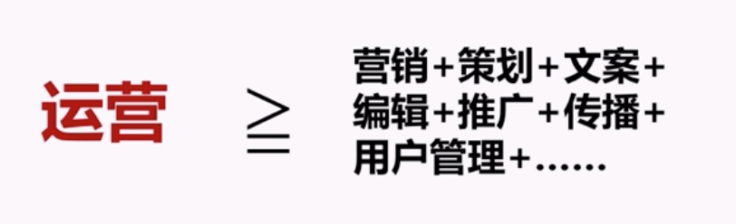

运营基础
一、什么是运营？
A.为什么会出现“运营”这个职能？
1.“运营”是什么？以微信群为例：
- 1）种子用户引入
- 2）群内话题组织
- 3）找到热情用户加强沟通
- 4）线下活动，帮助群成员缔结关系
- 5）SOP，界定群内主要事件
- 6）群的良性发展
2.运营，就是通过一系列穿针引线式的行为和资源投入，让一件呈能够持续良性运转
B.到底该如何理解运营？
1.运营面向的主体不同，运营手段也会不同
2.运营，是为了帮助产品和用户缔结关系，帮助产品和用户建立好和维护好关系，所使用的一切策略和手段
3.一切手段：

4.运营，并非是一个标准化的工作职能，而是需要结合业务类型，通过一系列具体手段的组合来实现特定目的的过程
C.互联网公司的运营部门工作全貌
1.制定策略
- 评估产品阶段
- 评估产品形态
- 评估当前数据
2.分解指标，规划工作
- 目标拆分
- 资源争取、拓展&分配
- 工作任务规划
3.执行落地，达成目标
- 方案
- 活动
- 传播
- 产品机制
- 拓展/销售
- ……
4.检验数据，调整方向
- 数据分析
- 用户反馈
- 潜在产品方向&需求提炼
5.手段

6.共勉两句话：
- 1）运营，很多时候就是通过大量琐碎无趣的事情，来赋予产品闪耀的光芒
- 2）因为始终是距离用户最近的那个人，运营才具备了无限的可能性
二、互联网运营背后的那些宏观规律
A.互联网公司内的“运营”的职能分工
1.经典意义上的3大运营模块
- 1）内容运营
- 2）用户运营
- 3）活动运营
2.内容运营
- 1）内容生产
- 2）内容组织
- 3）内容消费
- 4）内容互动
- 5）内容传播
3.常见的内容运营岗位：编辑、记者、社区运营、新媒体运营……
4.用户的运营：一切核心都围绕着“开源”和“节流”


5.常见的用户运营执行岗位：推广、群运营、社区运营、核心用户运营……
6.活动的运营

7.运营最终要关注的仍然是两个分支：
- 1）推广、拉新、引流
- 2）用户维系
B.运营从业者的职业发展
1.收入级别和Title

2.技能阶段

3.公司发展阶段

C.生死冤家：产品和运营
1.产品vs运营：同时面向用户

三、做符合产品生命周期的运营
A.什么是产品生命周期
1.产品生命周期（PLC）— S模型

2.S模型背后的逻辑

B.产品生命周期背后的规律与现象
1.只有拥有自发增长能力的产品才有运营价值，要做符合产品生命周期的运营！
2.两种可怕曲线


3.做符合产品生命周期的运营
- 1）探索期：探索、口碑，提供给用户超出他们预期的体验
- 2）成长期：增长模式&速度，能够迅速带来回报的手段，广告、对用户补贴等
- 3）成熟期：用户活跃度，提升用户活跃度，商业模式探索（广告、电商等）
- 4）衰退期：用户防流失&维系
4.互联网运营的逻辑，就是一种有节奏的、回报后置的逻辑
四、互联网公司内部的运营职能分工和发展轨迹
A.不同业务类型产品的运营侧重
1.运营的首要任务是确保核心业务逻辑通畅
2.业务类型与侧重点

B.不同产品形态的突破性增长引擎
1.工具类产品的成长驱动力：体验&效率&社交分享场景打通
2.内容类产品的成长驱动力：内容品质&独特性&互动&传播通路
3.社区类产品的成长驱动力：氛围+内容质量+话题
4.社交类产品的成长驱动力：关系链+氛围+玩法
5.平台类产品的成长驱动力：细分价值点+交叉补贴
内容运营
一、内容运营的范围与定义
A.内容运营的范围与定义
1.内容是：网站或者产品中可供用户消费并且延长用户停留时间、促进用户转化的展现均可称之为【内容】
2.内容的类型

3.内容

4.内容运营流程

5.工作核心
- 1）持续制作、编辑或推荐对用户有价值的内容，保证用户可以在产品中获取这些信息
- 2）根据KPI的设计，降低或者提高用户获取内容的成本
- 3）协助网站与产品获利
6.内容供应链
- 1）供应链：产品生产和流通过程中所涉及的原材料 供应商、生产商、分销商、零售商以及最终消费者等成员通过与上游、下游成员的连接（linkage）组成的网络结构
- 2）内容供应链

7.对内容运营人员的要求

二、内容运营的初期事项
A.内容运营的初期事项
1.构建内容运营框架
- 1）内容消费者定位
- 产品定位：我的产品是什么？有哪些内容？
- 受众定位：产品的用户是谁？他们在哪里？对内容有哪些要求？我的内容是否满足他们的要求？
- 运营目标：产品的运营目标是什么？什么样的指标可以衡量运营效果？内容对于这些指标的拉动体现在何处？
- 2）内容来源确认
- 内容采集：自己原创？授权转载？用户生成运营审核？应该选择哪一种采集方式？
- 来源渠道：这些内容从哪里来？怎么来？内容生产者从哪里找？如何让他们贡献内容？
- 3）内容标准确立
- 评价准则：什么样的内容是好的内容？什么是坏的内容？
- 激励机制：用什么样的策略来激励好的内容？用什么样的策略来惩罚坏的内容？权重怎么定义？
- 展现策略：怎么展现内容？需要哪些工具？
- 4）例子：

2.内容的初始化/产品冷启动问题
- 1）内容初始化就是在构建好的内容框架下，在用户进入之前，去填充一些内容，这些内容是内容运营初期网站或者产品上的核心部分，代表着网站与产品的价值观
- 2）从很小的方面做为切入口，进行冷启动
- 3）知乎冷启动

- 4）与用户产生情感连接：激励和诱导用户，内容分级
- 5）内容初化的工作内容
- 内容填充：工作人员、初始用户、种子用户完成产品初期的内容填充工作
- 把握内容质量：无论采用何种方式、何种做法，初始内容的质量必须保证，验证质量看是否能够匹配目标客户群需求
- 抓住种子用户：不是所有初始用户都是种子用户，只有那些积极参与产品建设，帮助产品扩散与宣传的用户，才是种子用户
三、持续运营中的内容运营
A.内容质量标准的建立
1.内容质量是评判互联网产品所提供内容好坏的程度标准
2.拓扑心理学的一个公式：一个人的行为（Behavior）是其人格或个性（Personality）与其当时所处情景或环境（Environment）的函数。换句话说，人的表现是由他们自身的素质和当时面对的情景共同决定的

3.消费者的人格与个性运营者无法掌控，但运营者可以影响环境。电商业态中，每个商家自己可以掌控的就是展现给消费者的商品内容
4.讨论
- 1）你目前所处的公司的产品是什么？
- 2）哪些是它的内容？
- 3）你如何判定内容的质量？
4.知乎的内容甄别

5.微信公众号的内容甄别

6.建立质量标准的执行
- 1）针对自己的特点，建立不同的内容质量标准并执行，是持续进行内容运营的第一步
- 2）第二步是将内容呈现给你的用户
B.内容呈现方式
1.内容如何呈现？

2.目的都是提升粘性和转化
C.推送与推荐机制
1.推送与通知渠道

2.用户行为报告

3.广告位推荐
4.优质内容整理：版块（关注内容、整体内容优质部分）
5.推送不要过于频繁，把握时间和频次，不打扰用户
6.推荐不打扰，内容精致
四、内容运营的核心工作
A.内容消费者定位
1.内容消费者是消费内容的人，他们与产品本身的定位息息相关


2.定位内容消费者，是一个以内容为主的产品在运营上首先要做的事情，它是最早一批种子用户中进行内容消费的人群画像的关键

3.定位，是为了寻找（触达）与匹配（筛选）
4.控制与获取内容消费者的途径
- 1）邀请机制


- 2）护城河机制


- 3）有邀请，就有护城河，他们是一块硬币的两面
- 制造稀缺
- 让用户遵循规则行动
B.内容生产者维系
1.内容生产者是生产内容的人，是产品内容的发动机

2.定位内容生产者，是维系内容生产者的基础

3.例子

4.所谓维系，首先要给予环境，然后制定规则，最后按照规则进行奖惩。维系的本质是建立信任，并尽可能多的靠近内容生产者
C.反馈机制与跟进策略
1.内容生产者和内容消费者都会针对平台进行反馈。对于反馈需要制定跟进策略，增强粘着与转化
2.常见反馈渠道：产品内功能、邮箱、客服电话Inbound、IM、主动数据挖掘
3.常见跟进渠道：邮箱、客服电话Outbound、IM、内部需求评审
五、公共平台的内容运营
A.有哪些公众平台
1.公众平台

2.微信

B.平台特点与内容适配
1.公众平台内容运营三步走
- 1）定位
- 受众定位：谁会爱我？
- 内容定位：用什么让他们爱我？
- 2）培养
- 阅读习惯：准时想到我
- 阅读体验：每次都类似
- 阅读感受：就是这个味儿！
- 3）互动
- 人格化：这不是号，是人
- 预期管理：他一直就这样
- 获取灵感：三人行必有我师
2.逻辑思维案例

3.咪蒙

4.张记杂货铺

六、内容的传播与扩散
A.用户为什么会传播内容
1.卢因《群体生活渠道》：信息总是沿着含有门区的某些渠道流动，在那里，或是根据公正无私的规定，或是根据【守门人】的个人意见，对信息或商品是否被允许进入渠道或继续在渠道里流动做出决定
2.信息内容图

3.更容易被传播

4.人人都是内容审查者，只有符合内容审查者预期的内容才会被传播
B.促进用户传播的方法
1.方法

2.危言耸听：故意去把一件事情说得神乎其神，夸大其影响和危害，用恐惧和疑虑驱动人们扩散，标题党类，养生，谣言
3.利益诱惑：用利益诱导别人进行传播，群红包，转发点赞抽奖等
4.诚恳求助：态度极为诚恳的请别人帮忙扩散
5.主动分享：内容确实打动人心，阅读者发自内心的主动进行传播，干货类，不明觉厉类
活动运营
一、了解活动运营
A.最具爆发力的运营手段
1.活动运营：根据既定的目标，通过策划并执行短期活动，在一定时间段内快速提升产品相关指标的运营手段

2.活动运营特点和价值
- 1）效果爆发力
- 相比其他运营手段，活动运营效果爆发力更强
- 刺激大多数来自于它所营造的紧迫感
- 有时效性，不可持续，会合理地回落
- 2）用户感知度
- 弥补互联网产品的体验不足
- 更容易把信息传达给用户
- 用户更愿意去通过参与活动来感知你的产品或服务
- 3）产品联接度
- 一种成熟的活动形式，可以发展成一款固定的产品
- 对于产品生命力的表达 ，活动也可以帮忙强化
- 活动，也可以很好地反映出你的品牌调性
3.活动运营的内容

4.PDCA项目管理模型

5.活动运营中四大环节包含的内容

二、目标明确的前期准备
A.目标需求分析
1.指标订立：没有明确目标的活动都是耍流氓。所有活动的开展，都必须要有明确而清晰的目标，往后所有的策划和执行中的任何一项决策都是围绕着这个目标走
2.明确的目标可以帮助你快速地研究活动方向
3.明确的目标，就是最强的“分歧终端机”
4.目标需要可量化
5.定目标的时候要认清短期指标和长期目的
6.产品及用户分析

7.竞品参考：我们需要关注的竞品，有哪些类型

- 1）了解竞品日常及特殊的活动形式
- 2）保持一个中立的态度去评价竞品活动的优势和劣势
- 3）除了自己的理性分析外，更重要的是要看看市场反应
8.往期活动回顾
B.明确可用资源
1.对于资源的评估和申请，应该符合的原则
- 1）合理评估所需资源：活动运营所需的资源，是跟整个产品或者其他运营项目共用的，我们需要正确评估什么样的活动应该动用到怎样的资源，每举办一个活动都是一次资源的损耗，我们要尽可能让资源用有所得，产生最大的效益
- 2）让资源分配更有节奏：提前规划活动排期->错峰安排项目->合理安排优先级
2.预算包括
- 1）活动奖品费用
- 2）活动执行费用
- 3）市场推广费用
3.我们可以争取的推广资源

4.开发资源评估

C.活动性质与实施平台
1.活动性质
- 1）独立线上活动：目的单一，不会涉及太多的任务指标，时间周期短，活动样式不受限制，较为灵活多变
- 2）线下活动：也就是地面推广活动，这类型活动更侧重于传统模式而非网络模式的推广，注重实际生活中面对面的沟通交流
- 3）综合性大型活动：
- 活动本身就具有品牌影响力的，并且是固定周期举办的
- 在活动内容方面，形式是非常丰富的，预热期到高潮期节奏内容是很分明的
- 在制作方面，筹备时间非常长，通常是跨部门甚至跨公司合作的
- 4）系统性活动：形式较为固定，有统一的开发模板活动系列活动
- 5）联合活动：一种是双方不存在金钱交易 ，纯粹的商务合作，相互借力举办活动。另一种是其中一方付费与对方合作，换取对方资源
2.活动实施平台

- 1）内部平台：电脑版、适配版、APP版几个版本
- 2）外部平台
- 注意帐号登录体系，减少用户流失
- 要遵守别人地盘的游戏规则
- 得时刻记得，往自己平台倒流
三、活动策划如何开展
A.好的活动策划应该具备的特征
1.匹配度
- 1）活动的策划要与产品，用户相匹配
- 2）活动的策划要紧密地围绕着目标设计
- 3）高匹配度的合作方与推广渠道
2.诱惑力
- 1）诱惑力，也就是具备吸引人注意并认同的能力
- 2）最基本的方法是，打破常规，创造意外
- 让人感到“惊讶”
- 让大家感到“有趣”
- 勾起“情感”触动
- 制造悬念
- 3）更重要的是能获得认同，避免哗众取宠
3.易懂性
- 1）问同事
- 2）问用户
- 3）问亲友
4.可信度
- 1）活动方案：有没有夸大
- 2）交互设计：有没有断层
- 3）视觉设计：质量
- 4）规划：门槛
- 5）客服通道：障碍
5.现场感
- 1）“从众”，指的是个人受到外界人群行为的影响，而在自己的知觉、判断、认识上表现出符合于公众舆论或者多数人的行为方式
- 2）即时反馈：建立在完善的交互之上
6.满足感
- 1）用户从这个活动产生的满足感会跟他后续所能发挥的价值成正比
- 多一些真诚，少一些套路
- 如果不能满足所有人，就满足更重要的用户
B.活动策划核心创作部分
1.主题与时间


- 1）其他：话题延伸、反映产品特性
2.形式
- 让利类：通过金钱或实物相关的利益奖励来吸引用户实现你的目的，完成指标
- 游戏类：通过一些互动小游戏来吸引用户关注，转化，传播
- 话题类：引发话题讨论，促进用户活跃度同时形成传播吸引更多用户关注
- 互动类：通过建立趣味规则并提供互动平台，引发用户自行互动
3.流程与规则
- 1）设计原则
- 参与简单，门槛不高
- 通俗易懂，合乎情理
- 单点顺畅，多点不乱
- 2）正确表达方式

C.除了活动主体，你还应该考虑的事
1.成本管控

- 1）确认规则/数量/抽取机制
- 2）实时监测派发情况
- 3）设立报警机制
2.活动风险

3.客服备案
- 1）策划时，应该跟客服沟通好活动内容
- 2）客服的经验可以指导我们更好地策划
- 3）提前跟客服沟通好相应的话术
4.投放推广：我们在策划前已经对推广资源有了初步的评估，在活动主题及内容策划出来之后，可以跟市场人员详细沟通活动内容，以制定更准确的推广方案
5.统计与监测
- 1）为什么要进行数据监测与统计？
- 证明基本项指标提升是跟本次活动有关
- 对活动质量的监督/分析/总结与优化
- 2）数据的统计与监测怎么规划？
- 实时监测，可以帮助我们迅速找到问题优化活动
- 赛后总结，对活动每一个环节的数据进行整体统计
6.效果评估
- 1）通过任务的分解；大致预估结果

- 2）各环节任务互相调配，拉上补下

D.形成你的活动方案
1.策划方案

2.策划方案

四、瞬息万变的执行阶段
A.如何超额还原策划案
1.活动执行全流程

2.信息管理：让每一个人都清楚了解活动最新的需求，确保信息的互通到位
- 1）需要同步共享的信息

- 2）协同管理
- 规范管理，提高工作效率
- 节省运营成本
- 避免信息不对称
- 促进项目经验的保留与分享

3.进度管理
- 1）沟通需求
- 2）盯紧进度
- 3）决策要狠
- 4）流程优化
- 5）果断放弃
4.分歧管理
- 1）产生的原因
- 在每一个策划到执行的小细节上，都是一次选择的过程
- 大家都希望提供最优质的内容，判断角度不同，自然会存在分歧
- 2）解决分歧方法
- 可以用数据比较的方法而先出较优方案
- 没有数据选择的时候：双因素决策法、多次投票法


5.质量管理
- 1）有健全的审核标准和审核流程
- 2）充分沟通，多提供参考案例与具体说明
- 3）清楚每个执行环节的关注点

B.热情对待上线，冷静处理突变
1.三个状态

2.预热期

3.引爆期

4.冷静期

5.活动监测内容

6.优化

C.做好推广事半功倍
1.渠道选择

2.素材制作

- 1）几种常见的推广文案创作手法

- 2）视觉

3.传播节奏
五、坚持不懈地复盘总结
A.为什么要认真复盘总结
1.复盘：让个人与团队，在项目的实践中，总结问题与经验，能够发掘到新的思路，最终达到能力的提升
2.复盘与总结

3.活动后为什么要复盘
- 1）认清问题的本质，避免重复犯错
- 2）校验方向，总结规律，优化流程
- 3）发掘新知识，让经验得到传承
B.善用数据发现问题
1.数据在复盘中的作用
- 反映客观事实避免个人主观判断的影响
- 帮助我们精确地找出问题所在
- 启发新的思路
2.活动数据统计内容

3.怎么看数据
- 剔除影响数据的干扰因素
- 找准数据的统计方法
- 零散数据很多，需要有目的地组合分析
4.如何出结论
- 数据重要，结论，更重要
- 导出跟指标相关的结论
- 还有容易被忽略的数据
- 善于从对比中发现问题
C.复盘每个环节利弊
1.具体步骤

2.目标与效果对比分析

3.总结经验、检讨问题

4.大胆假设优化建议

5.注意
- 1）抛开个人利益得失，提升集体智慧
- 2）敢于反思，深入探究，开拓思路
- 3）导出到位的结果，共享经验，不断提升活动质量
数据驱动运营
一、数据分析是什么
A.数据分析是什么（上）
1.数据分析：就是通过分析数据，发现数据背后的价值
2.数据分析师的基本素质
- 1）对数据敏感
- 2）对业务熟悉
- 3）数据统计思想
- 4）实验设计方法
- 5）用户行为学
- 6）Excel、spss等统计工具
- 7）人际沟通
- 8）项目管理
- 9）日志、数据库与SQL….
- 10）热爱研究
3.数据分析的价值
- 1）是什么
- 2）为什么
- 3）怎么办


B.数据分析是什么（中）
1.数据的两种类型

2.数据从哪里来？
- 1）广义的数据

- 2）狭义的数据：埋点、加代码
C.数据分析是什么（下）
1.数据分析的基本步骤

2.数据分析岗位在工作中的定位

3.需求分析
- 1）此次数据分析的目的是什么？
- 2）这个推广的目的是什么？
- 3）什么时候要这个报告？
4.统计需求撰写

5.数据分析和报告撰写
- 1）必要的背景说明：研究目的、统计方法、统计术语
- 2）简要的分析结论：直指研究目的
- 3）逻辑清晰的分析过程：配以漂亮的四季青，效果更佳
二、运营数据分析怎么做
A.数据分析的常用框架（上）
1.框架的作用是什么？数据分析框架=数据分析方法论
- 1）网站分析基本指标

B.数据分析的常用框架（中）
1.用户行为理论
- 1）认知熟悉

- 2）AARRR

- 3）消费者购买决策理论

- 4）5W2H分析法


C.数据分析的常用框架（下）
1.不同产品关注不同指标
- 1）案例一：邮箱类产品常用指标

- 2）案例二：购物类产品常用指标


2.不同时期关注不同指标
- 1）产品生命周期

D.常用的统计分析方法（上）
1.先了解数据类型

2.统计图表


3.集中量数
- 1）一组数据中大量数据集中在某一个点或其上下的情况说明了该组数据的集中趋势，描述集中趋势的统计指标叫做集中量数
- 2）算术平均数：全部数据的算术平均，均值，符号M
- 3）中数，中位数，对一组排序后，正中间的一个数，或中间两个数的平均数
- 4）众数，一组数据中出现次数最多的数值，叫众数，可以不存在或者多于一个
E.常用的统计分析方法（下）
1.集中量数时的误区

2.相关关系


3.对比分析法

4.分组分析法

5.矩阵关联分析法

6.了解抽样原理


7.了解实验设计方法


三、数据驱动运营实例
A.数据驱动运营实例（上）
1.渠道效果


2.内容效果


3.作弊识别

B.数据驱动运营实例（下）
1.转化分析与优化


2.用户维系优化：拉新

3.用户维系优化：留存分析


4.精准营销


四、如何使用Excel快速进行一次数据分析
A.如何使用Excel快速进行一次数据分析
用户运营
一、运营的分工和目标
A.运营的分工
1.运营的分工

B.用户运营的核心目标
1.运营目标

2.考核标准不一样

3.从微博看部门之间分工合作

4.运营与市场、商务的职能

5.将互联网比作商场

6.地一步拆分运营部门考核指标

7.用户运营的核心目标


- 1）用户增长
- 2）活跃用户规模
8.基于用户商业化的方法

二、如何实现从0到1的冷启动？创业公司的用户运营
A.找到初期用户
1.互联网增长的范式

2.破局是一切的基础

B.如何培养用户忠诚度？
1.正确的定义用户

2.变化、市场+杠杆

3.变化

4.谁先拥抱变化？

C.如何维护并利用第一批核心用户？
1.切入点五个注意事项

2.初期用户哪里找

3.提高用户忠诚度

4.要捆绑核心用户

5.如何把用户吸引住？

6.运营的原则

7.产品和运营


三、开源节流，用户增长的套路
A.如何提升用户注册量和注册转化
1.开源=入口+转化

2.哪些市场手段可以增加注册？

3.哪些商务手段可以增加注册？

4.哪些运营手段可以增加注册？

5.完成整个注册引导流程的用户才是真正的“用户”
B.如何降低用户流失
1.流失用户：根据产品使用用户真实数据，为产品构建流失用户模型，以此来定义什么用户可被算作“流失用户”，什么用户存在流失趋势
2.活跃用户规模

3.节流：用户流失曲线

4.找到关键性指标

5.只要用户有代价，他就不容易流失
C.如何做好用户召回
1.流失后，常见的召回手段有哪些？

2.如何提高召回效率？

3.有些策略是要学会的

4.召回用户的引导转化

四、让用户更有价值，提高用户活跃的秘密
A.如何进行用户建模
1.用户活跃度曲线

2.用户建模

3.找用户特征

B.搭建用户成长体系
1.用户成长：如何让用户保持活跃？
- 1）活跃度模拟


- 2）建立优质成长路径

C.做好用户激励
1.建立激励体系四步走

2.用户应该扮演什么角色？

3.哪些行为应该被激励？

4.什么样的激励手段？

5.激励体系搭建

五、不要自HIGH，看看高手玩转运营的几个TIPS
A.运营策略中，运营和产品的分工
1.产品和运营的区别

2.运营三大原则

3.目标导向，明确运营的第一目标

4.效率优先，选择最有效策略

B.用户至上不是一个愿景
1.用户至上，找准目标用户

2.如何确定真实的目标？

3.为达目标“不择手段”的场景

4.典型产品的场景

5.搭建应用场景就是…

6.时间和地点的考虑

7.正确的时间才有奇效

8.注意应用场景的连贯性

9.案例：

网易严选活动运营案例解析
一、活动整体规划
1.品牌活动调性

2.优惠方式：寻找最适合自己的优惠方式

3.活动类型与频率


4.成本预算和优惠标准

5.活动计划表

二、从创意想法到传播事件
1.创意想法

2.制定活动方案

3.确定推广素材

4.制定传播策略

- 1）预热阶段


- 2）正式阶段


- 3）结束阶段

三、积累、沉淀与思考
1.根据数据解析

2.保留好的方式
- 1）尝试互动，保留好的方式，不断优化创新
- 2）复盘的意义？更高效得往前进
3.做好用户反馈

电商运营数据分析
一、运营分析思维必备
1.运营阶段最关心的数据指标

2.运营目的

3.运营数据

4.网站运营指标详解

5.数据分析方法-理论篇


6.数据分析方法-案例篇

7.数据分析工具

8.Excel

9.图形

二、用户分析案例探索
1.用户行为

2.用户画像

3.用户特征分类


三、营收及活动分析案例探索
四、产品运营分析案例探索